Proprietary to General Electric Company
Direction 5670006, Rev# 1
Discovery MR750w GEM Service Methods
Module Version 2.0, Version Date 10/14/11
Proprietary to General Electric Company |
| Required Persons | Preliminary Reqs | Procedure | Finalization |
|---|---|---|---|
| 1 | Not Applicable | 2 hours | Not Applicable |
This document provides instructions for setting up host system software. Refer to the appropriate section.
| Item | Qty | Effectivity | Part# | Manufacturer | |
|---|---|---|---|---|---|
| Service Methods DVD | 1 | - | - | - | |
| Item | Qty | Effectivity | Part# | Manufacturer |
|---|---|---|---|---|
| Linux OS Software DVD | 1 | - | - | - |
| MR Applications DVD | 1 | - | - | - |
| Restricted Service DVD | 1 | - | - | - |
| Condition | Reference | Effectivity |
|---|---|---|
If this is a new installation, B0 Cal File is needed which is supplied by Florence manufacturing. | - | - |
If this is NOT a new installation, perform a SaveInfo of all system settings before beginning the software installation. | - | - |
When conducting a software reinstallation, write down all the IIP configuration data to speed up the InSite process. (It is not saved as part of the SaveInfo procedure.) The data can be accessed from the Common Service Desktop → Configuration → Guided Install → FE Mode → Service SW/InSite → Config InSite IIP. Click on each IIP Configuration tab, and record the data. This data can be manually entered after the software application load. | - | - |
| ||||
The software load can be corrupted if the following conditions
are not met:
| ||||
Insert the Linux OS Software DVD into the DVD-ROM drive of the host computer.
| NOTE: | DVD-ROM drive (Top Drive) of the host computer must be used to install Linux OS Software. |
Reboot the host computer.
At the boot prompt, type the appropriate code for the keyboard in use, then press <Enter>:
| Keyboard Language | Code |
|---|---|
| English | GEHCMR |
| French | GEHC?R |
| Portuguese | GEHCMR |
| Italian | GEHCMR |
| Spanish | GEHCMR |
| German | GEHCMR |
| Swedish | GEHCMR |
You will see a series of progress bars. The OS software load takes about 20 minutes.
Illustration 1: Progress Bars
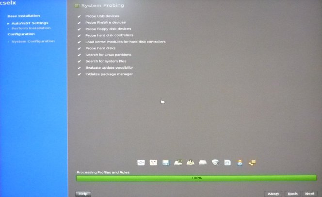
Once the installation is complete, the system reboots to a graphical user login prompt. Login as root. Password is operator.
Illustration 2: User Login Prompt
The OS disc will be automatically ejected and you will see the following pop-up. Remove it and continue to the next section.
Illustration 3:
Insert the MR Applications DVD into the DVD drive of the Host computer and click [OK].
After inserting the MR Applications DVD, a pop-up displays, indicating that the MR Applications Software Installation is in progress.
| NOTE: | If you do not see this pop-up, right click on the desktop and choose the “Install MRApps” option from the menu to begin installation. |
Illustration 4: MR Applications Software Installation in Progress

The system begins partitioning the hard drives. A progress window displays.
Illustration 5: Progress Window

After the “HDD Preparation Complete” pop-up appears, click [OK]. Guided Install will install and launch.
Illustration 6: HDD Preparation Complete Pop-Up

When the Locale Selection window displays, select the proper locale and language, then click [OK].
Illustration 7: Select Location

The Guided Install screen will display. When the Message screen shown below displays, indicating the improvements made from the previous software version, click [OK] to continue.
Illustration 8: Guided Install Upgrade Screen
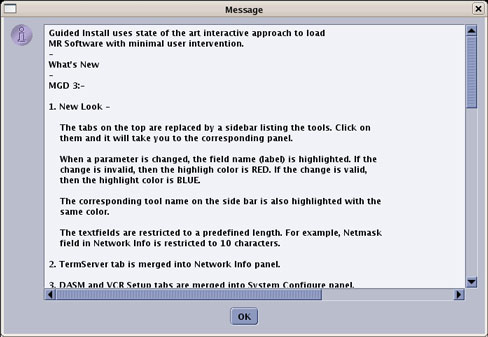
The MRApps DVD will be automatically ejected. Remove it from the drive.
When the Guided Install Configuration Media Dialog window displays, confirm the type of media to use to restore the Guided Install Configuration.
Illustration 9: Install Configuration Media Window

| ||||
| The last installed GUI configuration can only be installed if it was previously saved using Save GI Configuration. | ||||
Insert the Save Info DVD and click [OK]. Verify that the correct values are restored by checking each tab in the next step. Click [OK] to reinstall the last GUI installation configuration values.
The SaveInfo files are not restored at this point in the software load, but will be restored later.
If the GUI configuration was not saved, or the load is being performed for the first time, click [Cancel] to continue manually with the installation.
Select Basic Configuration tab shown below. Verify that all values under this tab are configured properly, including Time/Date.
| NOTE: | You can setup NTP (Network Time Protocol) for automatic time adjustment via network by entering NTP Server IP Address in Network Info Tab. Refer to NTP Server Time Synchronization for more details on setting up NTP server configuration. |
If failures are noted, click on the failure, then click [Go to Tab].
If any parameter does not match the expected criteria, the values in the left column will be red. If everything is acceptable, all values remain black. A changed value is indicated in blue.
Illustration 10: Guided Install - Configuration Screen
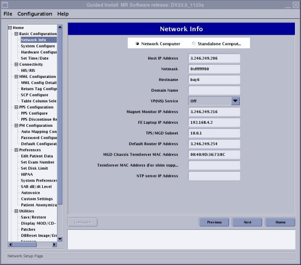
If the Guided Install configuration was successfully restored from the DVD, it is not necessary to change any of the parameters.
Check the parameters on the Verification tab and confirm there are no failures. If there are failures, make the necessary changes.
Make sure all required configuration tabs are filled out (not in any specific order) before continuing. The Verification tab lists any formatting errors as well as current settings.
Set Scan Range to proper value by selecting the System Configure option under the Basic Configuration option. If the length of the Magnet Room is less then 21.5 ft. (6.5 m), select [Short]. If the length is greater than 21.5 ft. (6.5 m), select [Long].
Illustration 11: Guided Install - Scan Range

Set the the proper value in Hardware Configure.
ISO Vector Z
For MR750w - 3.0T 70cm Magnet Enclosure
Lpca Configuration Type
For Flat Top Patient Table - 1 P-Port on LPCA
For Curved Top Patient Table - 2 P-Port on LPCA
Illustration 12: Hardware Configure

| ||||
| If loading software for the first time on a Host PC, the initial
boot-up will fail. Manually enter the Term Server information (found
on the front of the terminal server in the PGR cabinet) on the Network
Info screen shown in Illustration 10. Example format: 20:2D:90:22:44. Use colons between two digits; letters are case sensitive. | ||||
Proceed to the Verification tab (shown below).
Look for any items with a Fail status. Go to the tab with the error and correct it.
Click [Install] to open the Verification tab again.
| NOTE: | Failed entries are due to missing or incorrectly formatted entries. The [Install Software] button is inactive if there are failures. |
Illustration 13: Guided Install - Verification
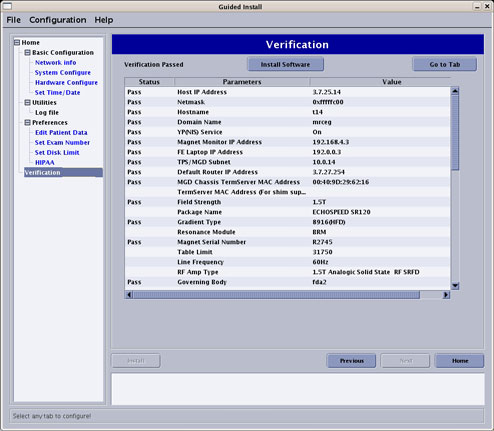
If all entries pass verification at this point, click [Install Software] to begin the MR Applications load. If the time and time zone are correct, click [Confirm] to proceed.
Illustration 14: Confirming Local Time

A pop-up message will display (shown below). Remove the SaveInfo disc from the DVD drive and insert the MRApps DVD.
Illustration 15: Insert MRApps CD

| NOTE: | A Software Installation in Progress message will display. The MR Applications load will take 5-10 minutes, depending on the host PC. |
Once the MR Applications load is complete, a confirmation message displays. Click [OK] to close the window.
Illustration 16: Guided Install - Software Installation Done
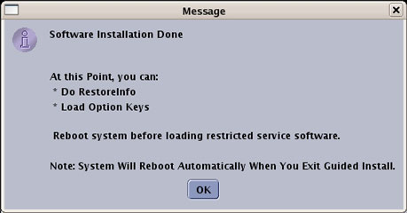
The GUI returns to the Guided Install window. Under the Utilities tab in the left navigation, select Save/Restore to open the Save/Restore screen.
Illustration 17: Save/Restore Screen
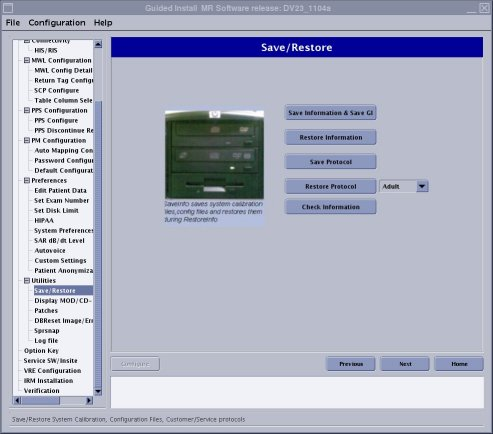
Remove the MRApps DVD from the drive. Insert the SaveInfo disc.
If the DVD with the saved configurations is not available, go to each tab in the Install GUI and complete all system information manually. A [Help] button that provides information of the required data and its format is available on each tab.
If the DVD with saved configurations is available, click [Restore Information], and select the proper medium from the dialog box and click [OK].
Illustration 18: Install Configuration Media Window
When the Restore Info dialog box displays, click [Restore all files automatically], then click [Continue].
Illustration 19: Restore Option Window

| NOTE: | If restoration fails, the DVD automatically ejects the disc. Exit the Guided Install and allow the system to reboot. When the system restarts, return to the Guided Install and attempt to Restore Info again. |
A RestoreInfo in Progress window scrolls file names as they are restored.
When the restoration is completed, an Update Utility message displays.
Illustration 20: Guided Install - Update Utility Message
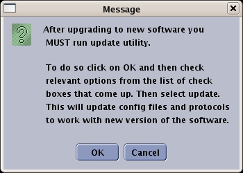
Click [OK] to open the Restore Manager dialog window shown below.
Illustration 21: Guided Install - Restore Utility

Select All to restore all items, and click [Update]. When the update is finished, click [Quit.]
Click [Yes] when the Quit Tool message displays.
Illustration 22: Quitting Restore Manager
The message shown below confirms that a log file was created. Click [OK] to finish.
Illustration 23: Log File
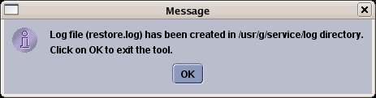
The MR Applications software load is now complete.
Quit the Guided Install properly.
Select “Quit” from File.
Illustration 24: Quit GUI
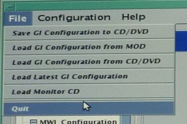
Click [Yes] for the message.
Illustration 25: Quit Message
Click [Quit] for the message.
Illustration 26: Configuration completion Message
Click [OK] for the reminder message.
Illustration 27: Reminder message
Reboot the system by clicking right-mouse-button on the desktop and select Reboot....
Illustration 28: Reboot
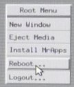
Log in to the system as root. (Password is operator)
Click [Yes] to start Guided Install.
Illustration 29: Guided Install Starter
Remove the SaveInfo disc.
Proceed to the next section.
From the Guided Installation interface left navigation menu, select VRE Configuration.
When the VRE Configuration screen displays, verify VRE Blades are properly installed and all hardware connections are in place, including Ethernet connections.
Illustration 30: VRE Configuration Screen

Click [Configure VRE Blades].
When the Information window displays, click [Continue] to confirm that the VRE Gigabit Switch Ethernet and Host Ethernet connections are complete and correct.
Illustration 31: Confirm VRE Installation

Illustration 32: VRE Gigabit Switch and Host Ethernet Connections
When the VRE window asks for the number of connected VRE Blades, select the “1” for 750w Image Compute Nodes (ICNs) number and click [OK].
The system needs to be configured for 1 ICN. This procedure will take between 15-30 minutes.
Illustration 33: VRE Blades Number
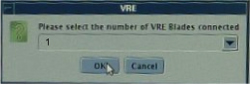
IMPORTANT: A pop-up message will prompt the user to insert the VRE OS disk for copying the ICN OS contents onto the hard drive. Insert the VRE OS Software DVD into the DVD-ROM drive of the host computer and click [OK]. VRE configuration progress details will display while ICN OS contents are being copied.
Illustration 34: Insert Linux OS Disk Pop-Up

Illustration 35: VRE Configuration Progress Details

The VRE OS DVD will be automatically ejected. Remove it from the DVD drive and close the tray.
| NOTE: | If the VRE configuration continues to fail, refer to VRE Troubleshooting. |
When VRE configuration is complete, a configuration Success message is displayed. Click [OK] to continue.
Illustration 36: VRE Config Completion
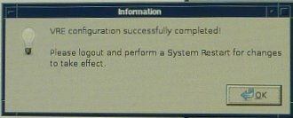
If the site has In-Room Monitor (IRM) , in the Guided Install window, select IRM Installation and then click the [Install IRM Software] button.
Illustration 37: IRM Installation Screen
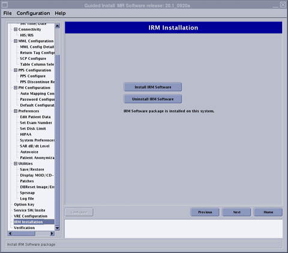
If this is the first or initial software load, perform a Term Server Reset by executing the following steps. Otherwise, proceed to Step 9.
Remove the power connector from the Term Server.
Press and hold the small square Reset button (next to the power jack), and connect power to the Term Server while continuing to press this button.
Illustration 38: Reset Term Server

Continue pressing the Reset button for 20 seconds.
Verify communication between the Host PC and Term Server:
Open a C-shell terminal.
Ping the ts1 address by typing: ping hostname-ts1 (where hostname is the hospital name). Press <Enter>.
Proper communication should display as shown below.
Illustration 39: Ping ts1

If an improper response of Host Unreachable displays, repeat the Term Server Reset procedure.
Illustration 40: Communications Error Message

To stop the test, press <Ctrl-c>.
When the Information window confirms that the configuration is complete, click [OK].
Load Service Software. Refer to Loading or Deleting Proprietary Software.
Load Service Methods documentation. Refer to Installing Service Methods CD onto System.
Restart the system and boot to applications as sdc user.
Load all applicable options.
| NOTE: | For installing the software using elicensing, refer to 2397845 Signa Software Option Install with eLicense. |